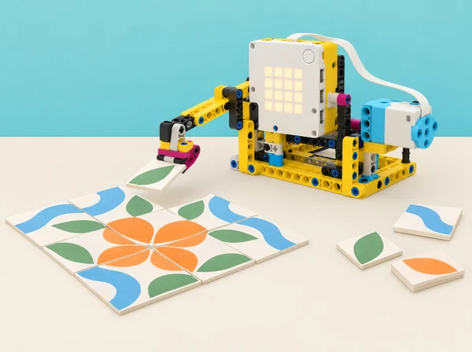

Un mosaic de moviments repetits
🏷️ Python: bucles i repetició
🌱 Situació, repte i intenció
No es tracta de reproduir una tècnica artesanal ni d’automatitzar treball manual real; és una maqueta computacional i artística.
Aquesta situació adapta la unitat 4 de Course 1, Doing Reps with Loops, de LEGO Education Introduction to Python Programming.
La progressió tracta bucles comptats en Warm Up Loop with Leo, registre de repeticions i compte arrere en Counting Reps with Leo, ritme en Dance Loop with Coach, selecció condicional de moviments en Setting Conditions for Yoga, comportament persistent en Infinite Moves, creació de model/algoritme repetitiu en Leading the Team with Loops i millora amb feedback en Ideas for Leading Your Team with Loops. Es canvia l’exercici corporal per un procés de composició de mosaic, conservant els conceptes de control i seqüència.
🎯 Aprenentatges i vocabulari
- Identificar un patró d’instruccions repetides i substituir còpies literals per un bucle
forquan el nombre de repeticions és conegut. - Interpretar
range(n)com un conjunt de n iteracions i predir quantes vegades s’executa el cos del bucle. - Usar una variable comptadora per registrar repeticions, mostrar un recompte i construir una seqüència de compte arrere sense confondre el valor mostrat amb l’índex del programa.
- Comparar un moviment repetit amb pausa fixa i un patró rítmic; documentar temps i diferències entre ordre i moviment físic real.
- Seleccionar una seqüència segons una condició explícita de disseny (p. ex. tipus de fitxa o patró acordat), i provar els dos camins d’eixida.
- Explicar per què un bucle infinit no té finalització pròpia, definir-ne una condició d’eixida o un mecanisme d’aturada manual i no executar-lo sense supervisió.
- Descompondre una composició repetitiva en estructura, nombre de mòduls, ordre, pausa i reinici; usar un cicle de disseny propi.
- Oferir feedback sobre el comportament i el codi amb criteris observables i registrar com una modificació afecta la repetició.
Iteració: una volta del cos del bucle. Comptador: variable que registra quantes voltes o elements s’han processat. Bucle comptat: repetició amb una quantitat coneguda d’iteracions. Condició: expressió que pot resultar vertadera o falsa. Bucle infinit: repetició que no acaba mentre no s’interrompa. Patró: ordre que es reconeix perquè alguns elements es repeteixen.
# Exemple de Python general: genera una llista de passos previsibles
for index in range(4):
print("col·loca la fitxa", index + 1)El codi sols imprimeix text i no controla SPIKE Prime. Per a moviment, pausa, matriu del hub i parada, adapteu la sintaxi a l’API Python de l’app instal·lada; les versions de SPIKE poden diferir. Confirmeu ports i velocitats amb el model immobilitzat abans d’executar-lo a la pista.
🧰 Materials i preparació
Un SPIKE Prime 45678 per equip, hub carregat, un motor mitjà i peces Technic per a un mecanisme de baixa força i recorregut curt, plataforma estable, fitxes grans planes de cartó o paper, quadrícula impresa, retoladors, cinta de paper, regle, diari d’enginyeria i dispositiu amb SPIKE Python i consola. El motor només mou un indicador o empeny una fitxa lleugera per una canaleta oberta; no s’usa eina de tall, pinça de força ni material menut.
El mural final es pot completar amb peces de paper sense mecanisme.
Definiu límits de velocitat i angle, topalls mecànics i espai segur perquè l’accessori no caiga de la taula. Cada equip tria un mòdul gràfic senzill (per exemple, alternança de dues formes o seqüència de tres colors) i una forma d’entrada manual. Prepareu codi de demostració amb un for curt, un comptador, una condició i un exemple de bucle infinit només per a lectura en paper.
Expliqueu que qualsevol codi que continua sense pausa pot congelar l’app o repetir moviment: la demostració d’infinit es traça mentalment o s’executa sense motors, i la professora manté accés a parar el programa.
Rols rotatius: lectura/escriptura Python, construcció segura, registre i revisió de patrons. Acordeu com es representa el pas real del motor: una fitxa moguda, una llum o una anotació. Si no es disposa de motor, useu una tira de paper amb marcadors per simular la mateixa lògica.
📅 Seqüència didàctica
Quatre repeticions, una instrucció (45 min)
Fase 1 · Activem i prediem
Fase 2 · Explorem i construïm
Fase 3 · Expliquem i registrem
Fase 4 · Apliquem i millorem
Fase 5 · Comprovem i reflexionem
Comptar fitxes i fer compte arrere (45 min)
Fase 1 · Activem i prediem
Problema (5 min): com sap l’operador quantes caselles del mosaic queden?
Fase 2 · Explorem i construïm
Variables i recompte (12 min): representeu una seqüència de cinc fitxes amb comptador que augmenta; prediu els valors abans d’executar.
Fase 3 · Expliquem i registrem
Comptador i eixida (18 min): modifiqueu el programa perquè cada iteració actualitze el nombre col·locat i el mostre a consola o a la matriu si la funció local està disponible. Creeu una segona versió amb compte arrere des del nombre total fins a zero. Distingiu el recompte de cicles del sensor: la seqüència no detecta per si sola que una fitxa s’ha mogut correctament.
Fase 4 · Apliquem i millorem
Fase 5 · Comprovem i reflexionem
Ritme de passos i pauses (45 min)
Fase 1 · Activem i prediem
Escolta/observació (6 min): feu una seqüència no sonora amb palmell sobre la taula o targetes, i una versió lenta i una ràpida. La participació corporal és opcional; també es poden ordenar targetes.
Fase 2 · Explorem i construïm
Fase 3 · Expliquem i registrem
Fase 4 · Apliquem i millorem
Comparació (8 min): mesureu el temps total de dues seqüències amb mateixos moviments però pauses distintes; compareu durada prevista i real.
Fase 5 · Comprovem i reflexionem
Si la fitxa és d’un tipus, canvia el patró (45 min)
Fase 1 · Activem i prediem
Regla desconnectada (8 min): definiu una condició visible sense dependre només del color: forma circular → seqüència A; forma quadrada → seqüència B. Els equips classifiquen targetes i descriuen la decisió “si… altrament…”.
Fase 2 · Explorem i construïm
Flowchart (8 min): dibuixeu entrada manual, condició, dues branques i punt de reunió.
Fase 3 · Expliquem i registrem
Fase 4 · Apliquem i millorem
Casos de prova (8 min): executeu cada condició i un valor no previst; anoteu quina branca s’activa i quina resposta ofereix el programa a l’entrada desconeguda.
Fase 5 · Comprovem i reflexionem
Repetir fins que algú ature: bucle infinit (45 min)
Fase 1 · Activem i prediem
Comparació (7 min): mireu un fragment finit amb range(3) i un d’infinit teòric com while True. Sense executar el segon, descriviu quin té eixida automàtica.
Fase 2 · Explorem i construïm
Usos i riscos (10 min): discutiu casos en què el codi podria esperar una interacció constant i per què cal una condició de parada, pausa segura i control manual.
Fase 3 · Expliquem i registrem
Laboratori en paper (15 min): traceu fragment infinit en una graella, localitzeu si existeix un canvi a la condició i afegiu un criteri de parada (comptador màxim, botó o estat explícit). Si es mostra en editor, és només sortida textual sense motors/connectivitat; mai es deixa el bucle executant sense supervisió.
Fase 4 · Apliquem i millorem
Fase 5 · Comprovem i reflexionem
Liderar un equip amb un patró propi (90–120 min)
Fase 1 · Activem i prediem
Encàrrec (10 min): dissenyeu un mòdul per al mosaic de la fira que use almenys una repetició i comunique clarament quan s’ha acabat. Pot moure un indicador, alternar dues fitxes o fer avançar un marcador; no ha d’emular postures físiques ni obligar persones a fer exercicis.
Fase 2 · Explorem i construïm
Fase 3 · Expliquem i registrem
Fase 4 · Apliquem i millorem
Fase 5 · Comprovem i reflexionem
Feedback per millorar el mosaic (30–45 min)
Fase 1 · Activem i prediem
Preparar evidències (7 min): els autors exposen diagrama, programa, patró acabat, un resultat repetit i una pregunta.
Fase 2 · Explorem i construïm
Fase 3 · Expliquem i registrem
Fase 4 · Apliquem i millorem
Fase 5 · Comprovem i reflexionem
🧪 Evidències i avaluació
El portafolis conté patró inicial, descomposició, traça de range, taula de comptador i compte arrere, cronologia del ritme, diagrama de branques, anàlisi escrita de bucle infinit, comentaris Python, disseny mecànic, casos 0/1/n, resultats repetits, feedback i registre d’una iteració. El producte final és un mòdul de mosaic de taula i una nota de programa que explica quantes voltes s’executa, què varia, quan finalitza i com s’atura si hi ha una incidència.
Quatre criteris: raonament de repetició (prediu quantitat i traça un bucle); comptador/condició (actualitza i mostra un recompte coherent, interpreta ambdues branques);
♿ Participació, accessibilitat i seguretat
Oferiu bucles com a targetes manipulables, traça en taula, for en pseudocodi i oportunitats iguals per a construir, programar i documentar. El patró s’explica amb forma, posició i text, no sols amb color o ritme sonor. Feu pauses entre assajos; els sons són opcionals. El mecanisme usa baixa potència, recorregut limitat i fitxes grans; mans fora de parts mòbils i cablejat mentre funciona. No executeu bucles infinits amb motors ni deixeu equips funcionant sols.
Reutilitzeu paper i cartó per a les peces decoratives i recicleu els materials al final.
🔗 Referents i adaptació
Adapta la unitat 4 Doing Reps with Loops del curs LEGO Education *Introduction to Python Programming · Course 1*: Warm Up Loop with Leo, Counting Reps with Leo, Dance Loop with Coach, Setting Conditions for Yoga, Infinite Moves, Leading the Team with Loops i Ideas for Leading Your Team with Loops. Es conserven la seqüència d’instruccions amb for i quantitat en range, variable de recompte/compte arrere, ritme, control condicional, comprensió d’un bucle infinit, repte obert de model repetitiu i feedback.
La guia oficial inclou un model de màquina de repeticions i un repte avançat de disseny/programació de 90–120 minuts; l’adaptació usa mosaics de cartó i moviment limitat. El codi de maquinari es valida amb la Knowledge Base de l’app local; no es copia cap construcció LEGO ni material d’alumnat.